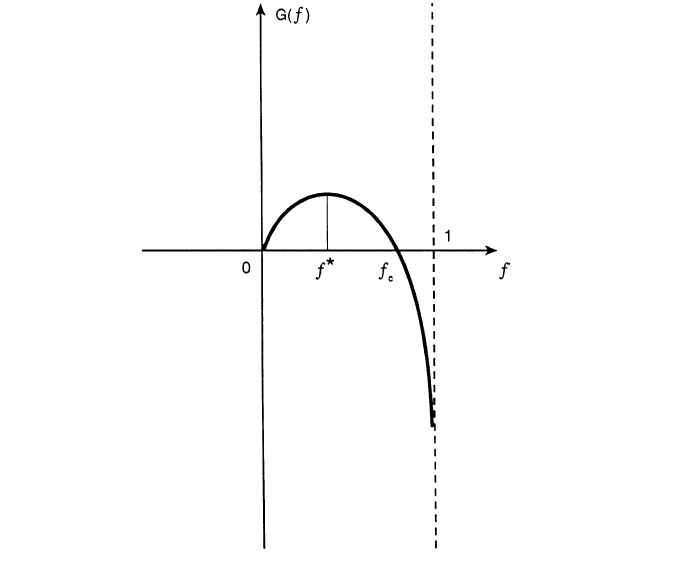

Optimal Betting Strategies and The Kelly Criterion
My last post was about some common mistakes when betting or gambling, even with a basic understanding of probability. This post is going to talk about the other side: optimal betting strategies using some very interesting results from some very famous mathematicians in the 50s and 60s. I'll spend a bit of time introducing some new concepts (at least to me), setting up the problem and digging into some of the math. We'll be looking at it from the lens of our simplest probability problem: the coin flip. A note: I will not be covering the part that shows you how to make a fortune -- that's an exercise best left to the reader.
Background
History
There is an incredibly fascinating history surrounding the mathematics of gambling and optimal betting strategies. The optimal betting strategy, more commonly known as the Kelly Criterion, was developed in the 50s by J. L. Kelly , a scientist working at Bell Labs on data compression schemes at the time. In 1956, he made an ingenious connection between his colleague's (Shannon) work on information theory, gambling, and a television game show publishing his new findings in a paper titled A New Interpretation of Information Rate (whose original title was Information Theory and Gambling).
The paper remained unnoticed until the 1960s when an MIT student named Ed Thorp told Shannon about his card-counting scheme to beat blackjack. Kelly's paper was referred to him, and Thorp started using it to amass a small fortune using Kelly's optimal betting strategy along with his card-counting system. Thorp and his colleagues later went on to use the Kelly Criterion in other varied gambling applications such as horse racing, sports betting, and even the stock market. Thorp's hedge fund outperformed many of his peers and it was this success that made Wall Street take notice of the Kelly Criterion. There is a great book called Fortune's Formula [1] that details the stories and adventures surrounding these brilliant minds.
Surely, Almost Surely
In probability theory, there are two terms that distinguish very similar conditions: "sure" and "almost sure". If an event is sure, then it always happens. That is, it is not possible for any other outcome to occur. If an event is almost sure then it occurs with probability 1. That is, theoretically there might be an outcome not belonging to this event that can occur, but the probability is so small that it's smaller than any fixed positive probability, and therefore must be 0. This is kind of abstract, so let's take a look at an example (from Wikipedia).
Imagine we have a unit square where we're randomly throwing point-sized darts that will land inside the square with a uniform distribution. For the entire square (light blue), it's easy to see that it makes up the entire sample space, so we would say that the dart will surely land within the unit square because there is no other possible outcome.
Further, the probability of landing in any given region is the ratio of its area to the ratio of the total unit square, simplifying to just the area of a given region. For example, taking the top left corner (dark blue), which is 0.5 units x 0.5 units, we could conclude that \(P(\text{dart lands in dark blue region}) = (0.5)(0.5) = 0.25\).
Now here's the interesting part, notice that there is a small red dot in the upper left corner. Imagine this is just a single point at the upper left corner on this unit square. What is the probability that the dart lands on the red dot? Since the red dot has an area of \(0\), \(P(\text{dart lands on red dot}) = 0\). So we could say that the dart almost surely does not land on the red dot. That is, theoretically it could, but the probability of doing so is \(0\). The same argument can be made for every point in the square.
The dart actually does land on a single point of the square though, so even though the probability of landing on that point is \(0\), it still does occur. For these situations, it's not sure that we won't hit that specific point but it's almost sure. A subtle difference but quite important one.
Optimal Betting [2]
Optimal Betting with Coin Tossing
Imagine playing a game with an infinite wealthy opponent who will always take an even bet made on repeated independent tosses of a biased coin. Further, let the probability of winning be \(p > \frac{1}{2}\) and losing be \(q = 1 - p\) [3], so we have a positive overall expected value for the game [4]. You start with \(X_0\) of initial capital. Question: How much should we bet each time?
- Example 1:
- This can be made a bit more concrete by putting some numbers to it. Let's say our coin lands on heads with a chance of \(p=0.53\), which means tails must be \(q=1-p=0.47\). Our initial bankroll is \(X_0=$100,000\). How much of this \($100,000\) should we bet on the first play?
Let's formalize the problem using some mathematics. Denote our remaining capital after the k'th toss as \(X_k\) and on the k'th toss we can bet \(0 \leq B_k \leq X_{k-1}\). Let's use a variable \(T_k = 1\) if the k'th trial is a win, and \(T_k=-1\) for a loss. Then for the n'th toss, we have:
One possible strategy we could use is to maximize the expected value of \(X_n\). Let's take a look at that:
Since \(p - q > 0\) this will have a positive expected payoff. To maximize \(E(X_n)\), we should maximize \(E(B_k)\) (this is the only variable we can play with), which translates to betting our entire bankroll at each toss. For example, on the first toss bet \(B_0 = X_0\), on the second toss (if we won the first one) bet \(B_1 = 2X_0\) and so on. It doesn't take a mathematician to know that is not a good strategy. Why? The probability of ruin is almost sure (ruin occurs when \(X_k = 0\) on the k'th toss).
If we're betting our entire bankroll, then we only need one loss to lose all our money. The probability of ruin is then \(1 - p^n\) for \(n\) tosses (every outcome except winning on every toss). Taking the limit as \(n\) approaches infinity:
So we can see that this aggressive strategy is almost surely [5] going to result in ruin.
Another strategy might be to try and minimize ruin. You can probably already intuit that this strategy involves making the minimum bet. From Equation 2, this is not desirable because it will also minimize our expected return. This suggests that we want a strategy that is in between the minimum bet and betting everything (duh!). The result is the Kelly Criterion.
The Kelly Criterion
Since our maximum bet is limited by our current bankroll, it seems plausible that the optimal strategy will always bet relative to our current bankroll. To simplify the math, we assume that the money is infinitely divisible. However, it should be noted that this limitation doesn't really matter too much when our capital is relatively large compared to the minimum divisible unit (think millions vs. cents).
If on every toss, we bet a fraction of our bankroll (known as "fixed fraction" betting), \(B_k = fX_{k-1}\), where \(0 \leq f \leq 1\), we can derive an equation for our bankroll after \(S\) successes and \(F\) failures in \(S+F=n\) trials:
Notice that we can't technically ever get to \(0\) but practically there is a minimum bet and if we go below it, we are basically ruined. We can just re-interpret ruin in this manner. That is, ruin for a certain strategy is when we will almost surely go below some small positive integer \(\epsilon\) as the number of trials \(n\) grows i.e., \(lim_{n\rightarrow \infty}P(X_n \leq \epsilon) = 1\).
Now let's setup what we're trying to maximize. We saw that trying to maximize the expected return leads us to almost surely ruin. Instead, Kelly chose to maximize the expected exponential growth rate. Let's see what that means by first looking at the ratio of current bankroll to our starting bankroll:
So \(G(f)\) represents the exponent (base \(e\)) on how fast our bankroll is growing. Substituting Equation 4 into \(G(f)\):
Now since \(G(f)\) is a random variable, we want to maximize the expected value of it (which we denote as \(g(f)\)):
The last line simplifies because the expected proportion of successes and failures is just their probabilities [6]. Now all we have to do is a simple exercise in calculus to find the optimal value \(f^*\) that maximizes \(g(f)\):
So we now have our optimal betting criterion (for even bets), fractional bets with \(f^*=p-q\).
Another interesting behavior of varying our fractional bets can be gleaned by graphing \(G(f)\) [7]:
We can see that our \(f^*\) maximizes the growth rate. However, there is a point \(f_c\) where our growth rate becomes negative. This implies that if we over-bet \(f > f_c\), we will almost surely reach ruin (because we have a negative growth rate). The following (summarized) theorem from Thorp's paper states this more precisely:
- Theorem 1
- If \(g(f) > 0\), then \(lim_{n\rightarrow \infty}X_n = \infty\) almost surely.
- If \(g(f) < 0\), then \(lim_{n\rightarrow \infty}X_n = 0\) almost surely.
- Given a strategy \(\Theta^*\) and any other "essentially different strategy" \(\Theta\), we have \(lim_{n\rightarrow \infty}\frac{X_n(\Theta^*)}{X_n(\Theta)} = \infty\) almost surely.
From this theorem, we can see that if we pick a fraction such that \(g(f) > 0\), then we'll almost surely tend towards an increasing bankroll. Conversely, if we pick a fraction \(g(f)<0\), then we will almost surely result in ruin. This matches up with our intuition that over-betting is counter-productive.
- Example 2:
-
(Continued from Example 1) Suppose we have our even-bet coin toss game and the probability of heads is \(p=0.53\) and probability of tails is \(q=0.47\). Our initial bankroll is \($100,000\) (big enough that the minimum bet isn't really significant). Applying our optimal betting criteria, on our first play we should bet \(f=p-q=0.53-0.47=0.06\) or \(6\%\) of our bankroll, translating to \($100,000 * 6\% = $6,000\). Assuming we win the first play, we should bet \($106,000 * 6\% = $6,360\) and so on.
If we bet less than \(6\%\), we will still be increasing our bankroll but not at the optimal rate. We can also bet more than \(6\%\) up to the theoretical point \(f_c\) such that \(g(f_c)=0\) with the same result. We can numerically determine this turning point, which in this case is \(f_c \approx 0.11973\). So betting more than roughly 11.9% will almost surely cause us ruin.
We can also compute the expected exponential growth rate using our optimal \(f^*= 0.06\):
\begin{align*} g(f^*) = g(0.06) &= E[p\log(1+f) + q\log(1-f)] \\ &= 0.53\log(1+0.06) + 0.47\log(1-0.06)] \\ &\approx 0.001801 \tag{9} \end{align*}So after \(n\) plays, a player can expect his bankroll to be \(e^{0.001801n}\) times larger. A doubling time can be computed by setting \(e^{0.001801n}=2\), resulting in \(n\approx 385\) plays.
Betting with Uneven Payoffs and Other Variations
We've so far only looked at games with even payoffs. We can generalize this result. If for each unit wagered, you can win \(b\) units, we can derive a modified version of Equation 7:
Solving for the optimum yields \(f^*=\frac{bp-q}{b}\).
Another variation is when you can make multiple simultaneous bets such as when multiple players share a single bankroll. Going through a similar exercise, we can derive values for \(f_1^*, f_2^*, \ldots\) assuming the games played are independent. When two players are playing the same game (e.g. same table for Blackjack), the bets are correlated and adjustments must be made. Additionally, we can analyze more complex situations such as continuous (or nearly continuous) outcomes like the stock market which require a more thorough analysis using more complex math. See Thorp's paper for more details.
Conclusion
Kelly's optimal betting criterion is an incredibly interesting mathematical result. However, perhaps what is more interesting is that this theoretical result was put into practice by some of the very mathematicians that worked on it! Thorp has had wild success applying it in various situations such as sports betting, Blackjack and the stock market. Of course by itself the criterion isn't much use, it is only once you've found a game that has a positive expected value that you can put it to use. I would go into how to do that but I think I've written enough for one day and as I said, it's best left as an exercise to the reader.
References and Further Reading
- The Kelly Criterion in Blackjack Sports Betting, and the Stock Market by Edward O. Thorp.
- Optimal Gambling Systems for Favorable Games, E. O. Thorp, Review of the International Statistical Institute Vol. 37, No. 3 (1969), pp. 273-293 .
- William Poundstone, Fortune's Formula: The Untold Story of the Scientific Betting System That Beat the Casinos and Wall Street. 2005. ISBN 978-0809045990. See also a brief biography of Kelly on William Poundstone's web page.
| [1] | William Poundstone, Fortune's Formula: The Untold Story of the Scientific Betting System That Beat the Casinos and Wall Street. 2005. ISBN 978-0809045990. See also a brief biography of Kelly on William Poundstone's web page. |
| [2] | This whole section just basically summarizes (with a bit more step-by-step for the math) the paper "The Kelly Criterion in Blackjack Sports Betting, and the Stock Market". So if you're really interested, it's probably best to check it out directly. |
| [3] | It doesn't really matter if the bias is heads or tails. The point is that you get to pick the winning side! |
| [4] | The expected value of winning for bet \(B\) is \(Bp-Bq = B(p-q) > 0\) since \(p > q\). |
| [5] | Almost surely here because it's theoretically possible that you can keep winning forever but it's such a small possibility that it basically can't happen. This is analogous to the red dot in the unit square. |
| [6] | The expected value of a binomial distribution (e.g. coin tossing) is just \(np\). So \(np/n = p\). |
| [7] | Image from "The Kelly Criterion in Blackjack Sports Betting, and the Stock Market". |